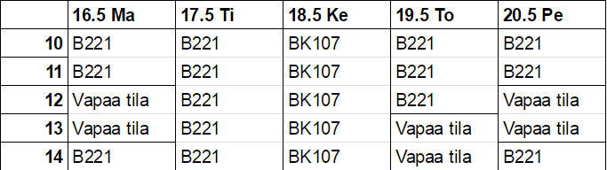
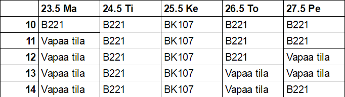

Introduction
In this workshop style course, students will form groups of 3 people. Each group will develop an individual AI and a group AI for the multiplayer online battle arena (MOBA) game Heroes of Newerth (HoN). The course starts on the 16th of May and ends on the 27th of May. The estimated work amount for this course is about 5 hours per day (weekends not included). At the end of the course there will be a tournament, where teams will battle for the course championship.
Timetable
  Vapaa tila kohdissa meillä ei ole mitään tiettyä tilaa käytössämme.Learning diary
Oppimispäiväkirja * Ryhmän yhteinen * Yhteenveto päivästä * Loppuyhteenveto * Palautus pdf:nä perjantaina 27.5. 15:00 mennessä molemmille: pessi.moilanen (at) cs.helsinki.fi sami.saada (at) cs.helsinki.fi Yhteenveto päivästä: * Pientä pohdintaa * Mitä tullut tehtyä? * Mitä opin? * Mitä seuraavaksi? Loppuyhteenveto ryhmän työskentelystä: * Mikä onnistui/epäonnistui? * Mitä parannettavaa olisi ollut? * Miten ryhmätyöskentely onnistui? * Mikä fiilis?
Heroes
Devourer https://www.heroesofnewerth.com/heroes/view/6/Devourer#hero Nymphora https://www.heroesofnewerth.com/heroes/view/10/Nymphora#hero Valkyrie https://www.heroesofnewerth.com/heroes/view/103/Valkyrie#hero Monkey king https://www.heroesofnewerth.com/heroes/view/197#hero Puppet master https://www.heroesofnewerth.com/heroes/view/91#hero
Macro, hero AI, week 1
- Buying items
- Using courier
- Lasthitting
- Positioning
- Pushing mode
- Killing mode
- Noticing tower range
- Using skills
- Using items
Micro, team AI, week 2
- Chaining stuns
- When to push as a team
- When and who picks rune
- Who to target
- Who takes lasthits
- When it is right time to be aggressive
- Who initiates
- Warding
How to start hon bot project
Fork the repository https://github.com/tkt-hon/midwars Clone the forked repository inside your home directory Create symlink so that games game/bots directory points to forked repository Then start the game
How to run bot games
Open console with ctrl + F8 and then copypaste following: Alias "create_midwars_botmatch" "set teambotmanager_legion; set teambotmanager_hellbourne; BotDebugEnable; StartGame practice test mode:botmatch map:midwars teamsize:5 spectators:1 allowduplicate:true; g_botDifficulty 3; g_camDistanceMax 10000; g_camDistanceMaxSpectator 10000;" Alias "team_default_legion" "set teambotmanager_legion default; AddBot 1 Default_Devourer; AddBot 1 Default_MonkeyKing; AddBot 1 Default_Nymphora; AddBot 1 Default_PuppetMaster; AddBot 1 Default_Valkyrie" Alias "team_default_hellbourne" "set teambotmanager_hellbourne default; AddBot 2 Default_Devourer; AddBot 2 Default_MonkeyKing; AddBot 2 Default_Nymphora; AddBot 2 Default_PuppetMaster; AddBot 2 Default_Valkyrie" To start the game write: create_midwars_botmatch To add heroes write: team_default_legion team_default_hellbourne And finally, press start match.
Summary
At first week we are making single hero AI's for five heroes listed above. At second week we are focusing into team AI's. At the end of second week learning diary needs to be submitted to course organizers.
Resources
Our wiki page contains some material.
HoN has community forums, where are lots of useful tips. Bots and Technical Discussion
API stuff aren't so well documented yet, but some Lua API stuff from our GitHub page (there are only files, but not documentation yet).